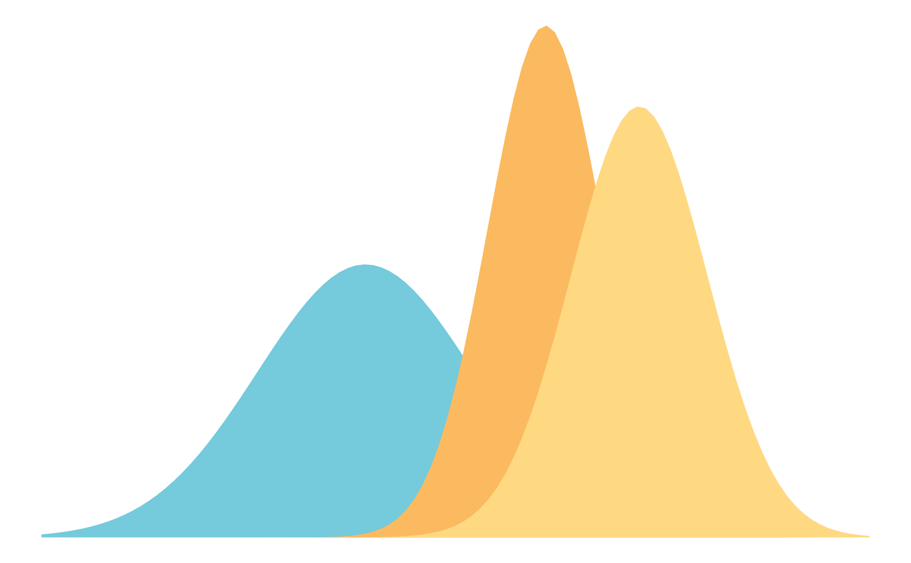

Approximate Bayesian inference for latent Gaussian models
Aug 6, 2026
R-INLA: syntax, f(), priors, outputINLA\[ p(x \mid y) = \frac{p(y \mid x)\, p(x)}{p(y)} \]
\[ p(x_i \mid y) = \int p(x \mid y)\, dx_{-i} \]
NIMBLE, Stan, JAGS).NIMBLE.| MCMC | INLA | |
|---|---|---|
| Approach | Stochastic sampling | Deterministic approximation |
| Model class | Almost anything | Latent Gaussian models only |
| Error | Monte Carlo error, \(\to 0\) with time | Approximation error, fixed |
| Runtime | Minutes to days | Seconds to minutes |
| Reproducible | Up to the seed | Exactly |
| Diagnostics needed | Many | Few |
Every model INLA can fit has this shape:
\[ \begin{split} \textbf{Stage 1:} \quad & y_i \mid x, \boldsymbol{\theta} \sim \prod_{i=1}^{n} p(y_i \mid x_i, \boldsymbol{\theta}) \\ \textbf{Stage 2:} \quad & \boldsymbol{x} \mid \boldsymbol{\theta} \sim N\big(\boldsymbol{0}, \boldsymbol{Q}(\boldsymbol{\theta})^{-1}\big) \\ \textbf{Stage 3:} \quad & \boldsymbol{\theta} \sim p(\boldsymbol{\theta}) \end{split} \]
\[ p(\boldsymbol{y} \mid \boldsymbol{x}, \boldsymbol{\theta}) = \prod_{i=1}^{n} p(y_i \mid \eta_i, \boldsymbol{\theta}) \]
\[ \eta_i = \alpha + \sum_{k} \beta_k z_{ki} + \sum_{j} f_j(u_{ji}) \]
Almost everything we fit in this course:
rw2, crossbasis-style)Two conditions must hold: the latent field is Gaussian and sparse, and \(\boldsymbol{\theta}\) is low-dimensional.
\[ Q_{ij} = 0 \iff x_i \perp x_j \mid \boldsymbol{x}_{-ij} \]
Two sets of marginals:
\[ p(x_i \mid \boldsymbol{y}) = \int p(x_i \mid \boldsymbol{\theta}, \boldsymbol{y})\, p(\boldsymbol{\theta} \mid \boldsymbol{y})\, d\boldsymbol{\theta} \]
\[ p(\theta_j \mid \boldsymbol{y}) = \int p(\boldsymbol{\theta} \mid \boldsymbol{y})\, d\boldsymbol{\theta}_{-j} \]
\[ \log f(\boldsymbol{x}) \approx \log f(\boldsymbol{x}^{*}) - \tfrac{1}{2}(\boldsymbol{x}-\boldsymbol{x}^{*})^{\top}\boldsymbol{H}(\boldsymbol{x}-\boldsymbol{x}^{*}) \]
\[ \int f(\boldsymbol{x})\, d\boldsymbol{x} \approx f(\boldsymbol{x}^{*}) \, (2\pi)^{d/2} \, |\boldsymbol{H}|^{-1/2} \]
Think of it as: if I knew the variances, the rest would be easy.
We want \(p(\boldsymbol{\theta} \mid \boldsymbol{y})\): how plausible is each set of variances, given the data?
\[ \tilde{p}(\boldsymbol{\theta} \mid \boldsymbol{y}) \;\propto\; \left. \frac{\overbrace{p(\boldsymbol{y} \mid \boldsymbol{x}, \boldsymbol{\theta})\, p(\boldsymbol{x} \mid \boldsymbol{\theta})\, p(\boldsymbol{\theta})}^{\text{joint: we know this exactly}}}{\underbrace{\tilde{p}_G(\boldsymbol{x} \mid \boldsymbol{\theta}, \boldsymbol{y})}_{\text{Gaussian stand-in}}} \right|_{\boldsymbol{x} \,=\, \boldsymbol{x}^{*}(\boldsymbol{\theta})} \]
We can only evaluate \(\tilde{p}(\boldsymbol{\theta} \mid \boldsymbol{y})\) point by point, so we need to choose good points.
int.strategy |
What it does | Trade-off |
|---|---|---|
"grid" |
Dense grid over \(\boldsymbol{\theta}\) | Most accurate; cost explodes beyond 2-3 hyperparameters |
"ccd" |
A clever scatter of points around the mode | Default when \(\dim(\boldsymbol{\theta}) > 2\); good accuracy, few points |
"eb" |
The mode only | Fastest; ignores uncertainty in \(\boldsymbol{\theta}\) |
"eb" while you iterate, then "ccd" for the final fit.For each \(\boldsymbol{\theta}^{(k)}\) we fit the latent field, then take a weighted average of the results:
\[ \underbrace{\tilde{p}(x_i \mid \boldsymbol{y})}_{\text{what we report}} \approx \sum_{k} \underbrace{\tilde{p}(x_i \mid \boldsymbol{\theta}^{(k)}, \boldsymbol{y})}_{\text{answer if }\boldsymbol{\theta}=\boldsymbol{\theta}^{(k)}} \times \underbrace{\tilde{p}(\boldsymbol{\theta}^{(k)} \mid \boldsymbol{y})\, \Delta_k}_{\text{how much it counts}} \]
strategy = "gaussian"): read the marginal straight off the Gaussian approximation. Fastest; can be poor in the tails and miss skewness.strategy = "laplace"): a full nested Laplace approximation for each \(x_i\). Most accurate, most expensive.strategy = "simplified.laplace"): a third-order Taylor correction to the Gaussian, capturing location and skewness. The default, and almost always the right choice.num.threads).inla(..., control.compute = list(config = TRUE)) and compare against a short MCMC run when it matters.inla.posterior.sample().)INLA implementation — though rgeneric and cgeneric let you write your own.INLA is not on CRAN. Install from the project repository:testing instead of stable for the development version.inla.upgrade() to update in place.inla()y ~ ... on the scale of the linear predictor.f() is a fixed effect (Gaussian prior, vague by default).f() is a structured latent component.E = for Poisson (expected counts) or Ntrials = for binomial. Note E is on the natural scale, not logged.-1 removes the intercept, exactly as in lm().f() functionindex must be an integer or factor indexing the latent component — not the covariate value itself.f() term adds hyperparameters to \(\boldsymbol{\theta}\).model = |
Structure | Typical use |
|---|---|---|
"iid" |
Independent Gaussian | Unstructured group effects |
"rw1", "rw2" |
Random walk | Smooth time trends, exposure-response |
"ar1" |
Autoregressive | Serially correlated time series |
"besag" |
ICAR | Spatial, neighbours only |
"bym2" |
Reparameterised BYM | Disease mapping (recommended) |
"spde2" |
Matérn via SPDE | Point-referenced / continuous space |
"generic0"-"generic3" |
User-supplied \(\boldsymbol{Q}\) | Custom structures |
inla.list.models() gives the full list.
Recall from the lecture:
\[ \begin{split} y_i &\sim \text{Pois}(\mu_i) \quad i = 1,\ldots,N \\ \log(\mu_i) &= \log(E_i) + \alpha \end{split} \]
f() term, so \(\boldsymbol{\theta}\) is empty.\[ \begin{split} y_i &\sim \text{Pois}(\mu_i) \\ \log(\mu_i) &= \log(E_i) + \alpha_{j[i]} \end{split} \]
-1 drops the global intercept so each level is estimated directly.\[ \begin{split} \log(\mu_i) &= \log(E_i) + \alpha + \theta_{j[i]}, \quad \theta_j \sim N(0, \sigma^2_p) \end{split} \]
mean, sd, 0.025quant, 0.5quant, 0.975quant, mode, kld.kld is the Kullback-Leibler divergence between the Gaussian and the simplified Laplace marginal. Values much above \(\sim 0.01\) suggest the approximation is straining.INLA reports precisions, not standard deviations: \(\tau = 1/\sigma^2\).factor(province) estimates: the hierarchical ones are pulled toward zero.control.fixed = list(mean = 0, prec = 0.01).loggamma(1, 5e-5) on the log-precision.Penalised complexity priors (Simpson et al., 2017) shrink toward a simpler base model — here, \(\sigma = 0\) — with an exponential penalty on the distance from it.
param = c(1, 0.01): “we think it is unlikely (1% chance) that the between-group SD exceeds 1 on the log scale”.dic$p.eff and waic$p.eff: effective number of parameters, a nice numerical read on how much shrinkage is happening.m$cpo$pit) should be roughly uniform if the model is calibrated.City effects and year-within-city effects, as in the lecture:
\[ \log(\mu_{ijt}) = \log(E_{ijt}) + \alpha + \beta x_{ijt} + \theta_j + \gamma_{jt} \]
d$city_id <- as.integer(as.factor(d$city))
d$cityyear_id <- as.integer(as.factor(paste(d$city, d$year)))
pc <- list(prec = list(prior = "pc.prec", param = c(1, 0.01)))
m2 <- inla(
admissions ~ 1 + pm25 +
f(city_id, model = "iid", hyper = pc) +
f(cityyear_id, model = "iid", hyper = pc),
family = "poisson", E = expected, data = d,
control.compute = list(dic = TRUE, waic = TRUE)
)f() terms.nb <- poly2nb(shp)
nb2INLA("map.adj", nb)
g <- inla.read.graph("map.adj")
m_bym2 <- inla(
deaths ~ 1 + f(area_id, model = "bym2", graph = g,
scale.model = TRUE,
hyper = list(
prec = list(prior = "pc.prec", param = c(1, 0.01)),
phi = list(prior = "pc", param = c(0.5, 0.5)))),
family = "poisson", E = expected, data = shp,
control.compute = list(dic = TRUE, waic = TRUE)
)bym2 separates total SD from the mixing parameter \(\phi\): the proportion of variance that is spatially structured.scale.model = TRUE makes the precision comparable across maps — essential for the prior to mean anything.1:n index.y are predicted, not dropped. Useful, but be deliberate about it.control.inla = list(strategy = "gaussian", int.strategy = "eb") first to check the model runs, then tighten.control.inla = list(h = 0.01) if the numerical Hessian misbehaves.verbose = TRUE prints what the optimiser is actually doing.NIMBLE |
INLA |
|
|---|---|---|
| Inference | MCMC (exact in the limit) | Deterministic approximation |
| Model class | Anything you can write in BUGS | Latent Gaussian models |
| Spatiotemporal model | Hours | Seconds to minutes |
| Priors | Fully flexible | Gaussian latent field required |
| Diagnostics | \(\hat{R}\), ESS, traces | kld, CPO failures, PIT |
| Best for | Bespoke, non-standard models | Standard hierarchical/spatial models, model development |
INLA going forwardThis lab revisits the Italian mortality data from the hierarchical modelling session, using R-INLA instead of NIMBLE.
During this lab session, we will:
INLA;NIMBLE output;bym2.